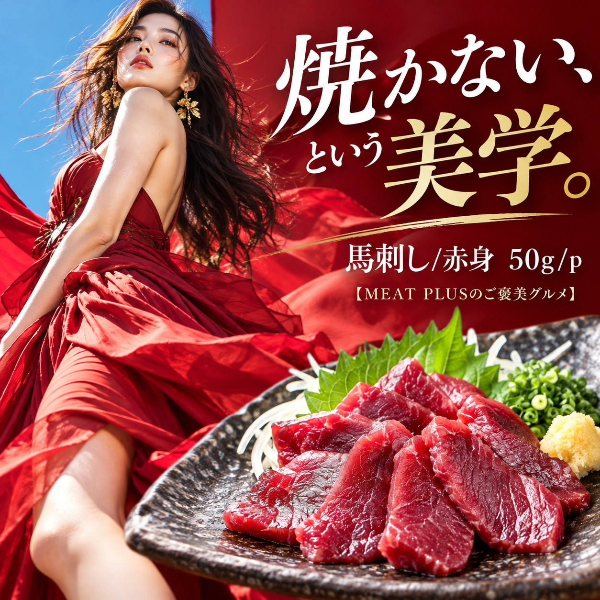
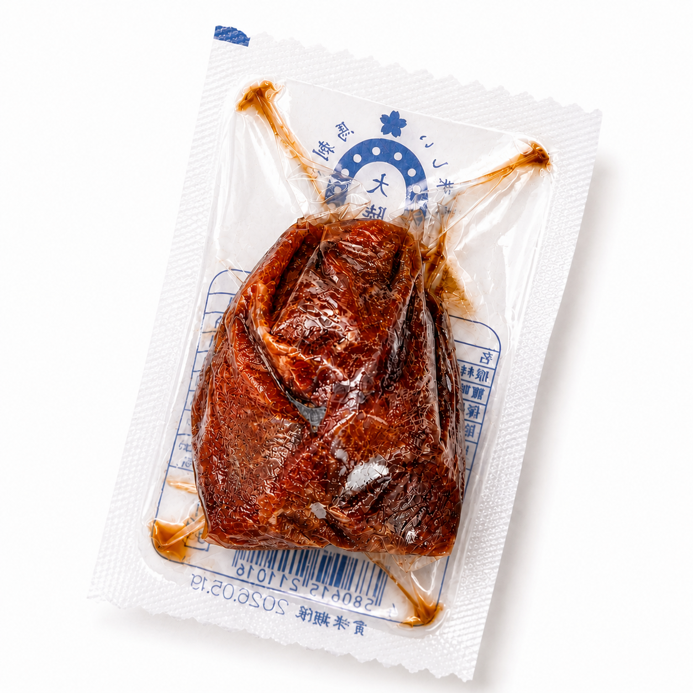
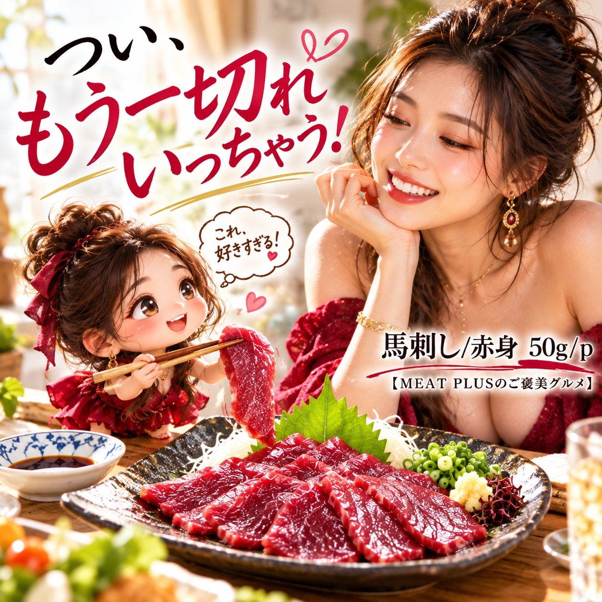

SCENE 01

e 馬・珍しいお肉
【馬肉の旨みをシンプルに味わう、赤身の馬刺し50gパック。】
馬肉の赤身を使用した馬刺しです。使い切りやすい50gの真空パックでお届けします。ご家庭で手軽に馬刺しを楽しみたい方におすすめです。 馬肉ならではの味わいをお楽しみいただける赤身部分です。夕食の一品としてはもちろん、お酒のお供にもぴったり。少量パックなので、一人前からでも気軽にお召し上がりいただけます。 商品は冷凍状態でお届けしますので、ご家庭の冷凍庫でストックしておけば、いつでもお好きなタイミングでお楽しみいただけます。急な来客時の一品としても便利です。 【商品仕様】 原材料は馬肉、原産国および製造地は中国です。保存は冷凍（-18℃以下）でお願いいたします。賞味期限は発送日より3ヶ月です。
公式サイトへ移動します。価格・在庫・配送条件は移動先で最終確認してください。


PRODUCT INFORMATION
馬肉
FAQ
掲載の商品規格は「50ｇ/ｐ」です。選択できる内容とご注文時の詳細は商品ページでご確認ください。
保存方法は「冷凍」です。賞味期限は「発送日より3ヶ月」です。
MEAT PLUS OFFICIAL SHOP
仕入れ・加工・梱包・発送まで自社で行うMEAT PLUSの公式オンラインショップでご注文いただけます。
公式オンラインショップで購入する馬刺し/赤身。商品規格：50ｇ/ｐ。保存方法：冷凍。原産国：中国。製造地：中国。賞味期限：発送日より3ヶ月。
価格・在庫・配送日・送料・ギフト対応は、公式通販の商品ページで最新情報をご確認ください。